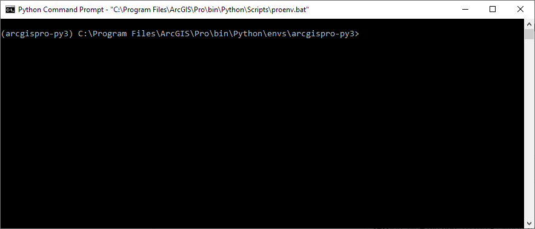

Conda
Was ist Conda?
Conda ist ein (von im Wesentlichen zwei1) Verwaltungssystem für Python2 Bibliotheken welches unter Windows, macOS und Linux läuft. Mit Conda lassen sich diese Libraries und deren Abhängigkeiten schnell installieren, ausführen und aktualisieren. Ein zusätzliches, wichtiges Feature von Conda ist die Verwaltung von sogenannten “Virtuellen Umgebungen”. Diese Umgebungen ermöglichen es, dass Package Installationen in abgeschottenen “Container” erfolgen. Das heisst, dass man unterschiedliche Versionen des gleichen Packages installieren kann, ohne das dies Probleme bereitet.
Conda installieren
Mit der Installation von ArcGIS wird (Mini-) Conda bereits mitgeliefert. Wer ArcGIS also schon hat, muss Conda nicht mehr installieren. Wer aber auf einem anderen Betriebssystem arbeiten möchte (oder ArcGIS auf Windows nicht installiert hat), kann Conda sehr einfach herunterladen und installieren: https://docs.conda.io/en/latest/miniconda.html.
Conda environment erstellen
Wenn man den Python Command Prompt startet, ist Conda bereits aktiviert. Dies ist daran erkennbar, dass vor dem Pfad (C:\Program Files\ArcGIS\Pro\bin\Python\envs\arcgispro-py3) noch etwas in Klammern steht (arcgispro-py3, siehe Abbildung 18.1).
arcgispro-py3 ist der Name des Conda Environments, das automatisch aktiviert wurde. Gleichzeitig ist dies das “default Python Environment”, welches ArcGIS Pro jeweils nutzt (siehe Abbildung 18.2). Das heisst, dieses Environment wird verwendet wenn man Python innerhalb von ArcGIS nutzen möchte und hat dafür gewisse Libraries vorinstalliert. Dabei macht ArcGIS aber folgenden Hinweis: Note: Cannot modify the default Python environment (arcigspro-py3). Clone then activate a new environment first. Genau diese Freiheit wollen wir aber haben und erstellen deswegen ein eigenes Environment.
Um ein neues Environment mit dem Namen geopython2 zu erstellen und aktivieren geht man wie folgt vor:
conda create --name geopython2 # erstellt das Environment
activate geopython # aktiviert das Environment (Windows)
conda activate geopython # aktiviert das Environment (Mac / Linux)Nun sollte in der Klammer der Name des eben erstellten Environment erscheinen (geopython). Selbstverständlich kann man den Namen des Environments selbst wählen, dabei sollten aber Umlaute, Sonderzeichen und Grossbuchstaben vermieden werden.


Conda packages installieren
Jetzt wo wir ein eigenes Conda Environment erstellt haben (geopython) müssen wir dieses mit Libraries befüllen. Aktuell ist es nämlich noch ziemlich leer, wie ihr mit conda list sehen könnt (versucht es aus!).
Letzte Woche hatten wir die Packages pandas sowie jupyter lab gebraucht. Diese Packages waren im Environment arcgispro-py3 bereits vorinstalliert.
conda install -c conda-forge jupyterlab # installiert jupyterlab
conda install -c conda-forge pandas # installiert pandas-c ist in den obigen install Befehlen ein sogenannter Flag welcher ankündigt, dass gleich der “Channel” angegeben wird. In beiden Fällen nutzen wir den “Channel” conda-forge, d.h. die Packages werden von conda-forge geladen. Welcher Channel angegeben werden muss kann über eine kurze Internetsuche in Erfahrung gebracht werden (z.B. nach “conda install pandas” suchen).
Bestätigt die Rückfragen (Proceed ([y]/n)?) mit y + Enter. Schaut euch nun euer Environment mit conda list an und startet danach jupyter lab indem ihr eben diesen Befehl in der Konsole eingebt. Wechselt aber vorher das Verzeichnis zu einem sinvolleren Ort (wie in Kapitel Kapitel 12 beschrieben).
Bekommst du beim Aufstarten von JupyterLab nachstehende Fehlermelung?
AttributeError: 'ExtensionManager' object has no attribute '_extensions'Diese kann man mit folgender Eingabe in die Konsole beheben:
jupyter server extension disable nbclassicConda cheat sheet
In der folgenden Tabelle werden die Einzelschritte in der Verwendung von Conda nochmal zusammengefasst. Wichtig ist vor allem, wann dieser Schritt nötig ist und wie er ausgeführt wird. Um die Tabelle kompakt zu halten werden gewisse Details als Fussnote verlinkt.
| Schritt | Wann ist dies nötig? | Details zum Vorgehen / Befehl für die Konsole3 |
|---|---|---|
| 1. Conda installieren (installiert das Program conda) | einmalig (ist nicht nötig, wenn ArcGIS Pro installiert ist) | Miniconda (empfohlen) oder anaconda herunterladen und installieren |
| 2. Virtual environment erstellen (erstellt eine neue Arbeitsumgebung) | einmal pro Projekt nötig (wobei eine environment auch wiederverwendet werden kann) | in der Konsole: conda create --name geopython |
| 3. Virutal environment aktivieren (schaltet den “Bearbeitungsmodus” ein) | jedes mal nöig wenn ein *Erweiterung installiert oder jupyter lab gestartet** werden soll | in der Konsole 4: activate geopython |
| 4. Jupyter lab installieren (fügt der virtuellen Umgebung diese IDE hinzu) | 1x pro environment* | in der Konsole 5: conda install -c conda-forge jupyterlab |
| 5. Jupyter lab starten (startet die IDE “JupyterLab”) | jedes mal, wenn am Projekt gearbeitet wird | in der Konsole 6: jupyter lab |
| 6. Jupyter lab (JL) beenden (beendet “JupyterLab” in der Console) | wenn ihr die Konsole wieder braucht | Während JL läuft, ist die Konsole blockiert. Um JL zu beenden und die Konsole freizugeben: Tastenkombination CTRL + C |
7. weitere Module 7 installieren (fügt der environment zB pandas hinzu) |
jedes mal nötig, wenn ein Modul in einer Environment fehlt8 | in der Konsole 9,10: conda install -c conda-forge pandas |
Neben Conda gibt es noch den “Package Manager”
pip, welchen wir im Unterricht aber nicht nutzen werden.↩︎Genau genommen ist Conda universell einsetzbar und kann auch Libraries von R und weiteren Programmiersprachen installieren.↩︎
Mit Konsole ist unter Windows cmd gemeint (Windowstaste > cmd). Unter Linux wird bash, auf Mac der Terminal verwendet.↩︎
Unter Linux:
conda activate geopython↩︎Falls die richtige environment noch nicht aktiviert ist, muss dies zuerst noch erfolgen (z.B
activate geopython).↩︎Falls die richtige environment noch nicht aktiviert ist, muss dies zuerst noch erfolgen (z.B
activate geopython).↩︎In Programmieren I - III brauchen wir die Module
pandas,matplotlib,geopandasunddescartes↩︎Dies macht sich bemerkbar duch die Fehlermeldung
ModuleNotFoundError: No module named 'pandas'↩︎Falls die richtige environment noch nicht aktiviert ist, muss dies zuerst noch erfolgen (z.B
activate geopython).↩︎Falls JupyterLabs läuft und dadurch die Konsole blockiert ist, gibt es folgende Möglichkeiten:
- JupyterLabs beenden (
Ctrl +C ) > Modul installieren > JupyterLab nochmal starten - einen neue Konsole starten > environment aktivieren > Modul installieren
- den Terminal innerhalb von JupyterLabs verwenden (File > New > Terminal) und dort die environment aktivieren und Modul installieren
- JupyterLabs beenden (